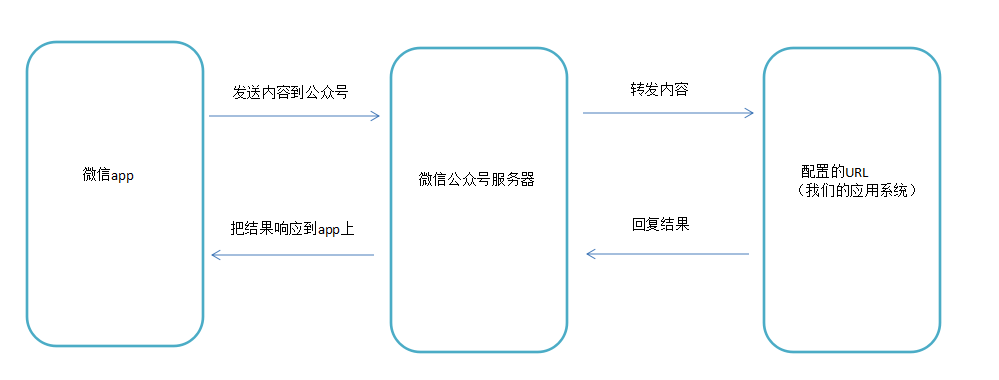
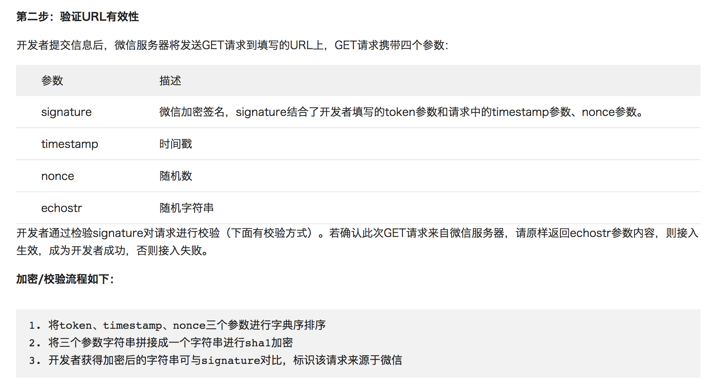
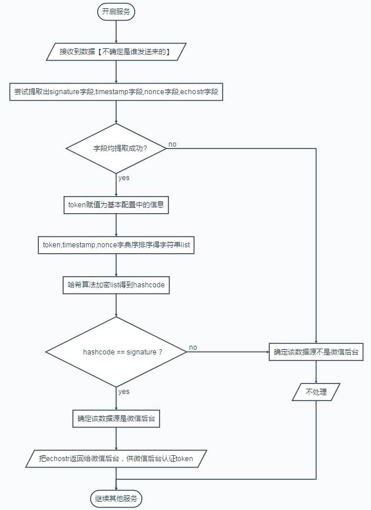

一 微信公众号开发概念
1.1 公众号的分类
微信公众号分为四类：
- 订阅号：每天能推送消息，允许个人申请，适合资讯服务（如各种媒体）
- 服务号：每月4次推送，适合企业数据服务交互（如招商银行公众号）
- 企业号：现在叫做企业微信，企业内部办公管理使用（可以理解为叮叮）
- 小程序：小程序功能更多，相当于简易版的app,比常规app开发简单。
1.2 微信公众平台
微信公众平台地址（管理微信公众号相关的后台）：http://mp.weixin.qq.com
微信公众平台分为两种管理模式：
- 编辑模式：进入公众平台后，左侧默认提供的管理功能，已经提供了大多数功能。
- 开发模式：进入开发模式后，公众号编辑模式下的功能全部作废，需要开发人员手动开发相应功能，能够让公众号拥有更强大的功能。
微信开发平台：在开发平台可以查看各类文档与工具，地址是：https://developers.weixin.qq.com/miniprogram/dev/api/
1.3 微信与服务器交互过程
当我们在微信app上，给公众号发送一条内容的时候，实际会发送到微信的服务器上，此时微信的服务器就会对内容进行封装成某种格式的数据比如xml格式，再转发到我们配置好的URL上，所以该URL实际就是我们处理数据的一个请求路径。该URL必须是能暴露给外界访问的一个公网地址，不能使用内网地址，生产环境可以申请腾讯云，阿里云服务器等，但是在开发环境中可以暂时利用一些软件来完成内网穿透，便于修改和测试，如ngork（https://dashboard.ngrok.com）。

在开发的过程中，我们会经常使用到微信公众号提供给开发者的开发文档：https://mp.weixin.qq.com/wiki
1.4 URL接入验证原理

由以上介绍可知，当我们填入url与token的值，并提交后，微信会发送一个get请求到我们填写的url上，并且携带4个参数，而signature参数结合了开发者填写的token参数和请求中的timestamp参数、nonce参数来做的加密签名，我们在后台需要对该签名进行校验，看是否合法。实际上，我们发现微信带过来的4个参数中并没有带token参数，仅有signature是和token有关的，所以我们应该在本地应用中也准备一个和填入的token相同的参数，再通过微信传入的timestamp与nonce做相同算法的加密操作，若结果与微信传入的signature相同，即为合法，则原样返回echostr参数，代表接入成功，否则不做处理，则接入失败。

1.5 成为微信开发者
在微信公众后台（https://mp.weixin.qq.com）左侧菜单最下方可以申请称为开发者， 或者直接使用微信测试号：http://mp.weixin.qq.com/debug/cgi-bin/sandbox?t=sandbox/login 配置中的IP白名单：只有配置了白名单的IP才能调取微信接口（相当于增强了安全性，防止因为开发者ID和密码被盗后，被盗取者调用接口） 服务器配置：微信开发必须使用外网地址，所以需要配置自己的服务器地址， 当然也可以使用ngork，配置内网穿透地址（百度即可）。
二 小程序会话
- 0-1 用户点击
<button open-type="getUserInfo" bindGetUserInfo="getUserInfo">授权登陆</button>弹出授权页面 - 0-2 小程序端通过
wx.getSetting()检查是否授权，如果已授权则可以直接调用wx.getUserInfo()获取信息 - 1 如果未授权，用户点击同意授权后，小程序端通过
wx.login()请求微信服务器获取code - 2 小程序端通过
wx.request()将code发送给业务服务端，业务服务端通过code,appid,appsecret三者请求微信服务器拿到openid,session_key，如果数据库中没有这个openid就算注册（有些项目需要用户填写昵称），如果有则准备制作session - 3 服务端将
session_key通过自己的加密方式生成新签名，这里命名为session_rd，并通过redis等缓存系统进行缓存（设置缓存时间，key为session_rd,value为openid） - 4 缓存后，服务端将加密后生成
session_rd返回给小程序端（出于安全考虑不能将原始的session_key给小程序） - 5 小程序端通过
wx.setStorageSync()将session_rd存储到本地的storage，并可以通过wx.getUserInfo获取用户敏感数据。后续用户重新进入小程序，调用wx.checksession()检测登录状态，如果失效，重新发起登录流程 - 6 小程序与业务服务端接口通信：小程序从storage读取
session_rd，发送给业务服务端，服务端根据session_rd判断是哪个用户
注意事项：一般session在半小时内就过期了，为了防止用户长期使用小程序突然断开，需要小程序端内部做一个循环，每隔二十分钟请求一次业务服务器获取新的session_rd,而且该循环函数应该在每次小程序打开时候就要启动，所以需要添加到app.js的生命周期函数中。
参考地址：https://mp.weixin.qq.com/wiki?t=resource/res_main&id=mp1421140842
session_key的作用：
wx.getUserInfo()在请求微信服务器时（设置withCredentials为true），会检查是否登录，如果此前已经吊用过wx.login且登录状态尚未过期，那么返回的数据会包含encryptedData,iv等敏感信息，由于客户端不知道encryptedData的内容，会将该数据发送给业务服务端，业务服务端通过session_key可以对其进行解密，解密后会是一个用户敏感信息的json结构数据。
示例：使用session_key获取用户手机
前端代码：
Page({
getPhoneNumber: function(e) {
console.log(e.detail.errMsg)
console.log(e.detail.iv)
console.log(e.detail.encryptedData)
}
})
服务端解密结果：
{
"phoneNumber": "13345678900"
}
三 Go开发微信
package main
import (
"crypto/sha1"
"fmt"
"io"
"log"
"net/http"
"sort"
"strings"
)
const (
token = "test"
)
func makeSignature(timestamp, nonce string) string { //本地计算signature
si := []string{token, timestamp, nonce}
sort.Strings(si) //字典序排序
str := strings.Join(si, "") //组合字符串
s := sha1.New() //返回一个新的使用SHA1校验的hash.Hash接口
io.WriteString(s, str) //WriteString函数将字符串数组str中的内容写入到s中
return fmt.Sprintf("%x", s.Sum(nil))
}
func validateUrl(w http.ResponseWriter, r *http.Request) bool {
timestamp := strings.Join(r.Form["timestamp"], "")
nonce := strings.Join(r.Form["nonce"], "")
signature := strings.Join(r.Form["signature"], "")
echostr := strings.Join(r.Form["echostr"], "")
signatureGen := makeSignature(timestamp, nonce)
if signatureGen != signature {
return false
}
fmt.Fprintf(w, echostr) //原样返回eechostr给微信服务器
return true
}
func procSignature(w http.ResponseWriter, r *http.Request) {
r.ParseForm()
if !validateUrl(w, r) {
log.Println("Wechat Service: This http request is not from wechat platform")
return
}
log.Println("validateUrl Ok")
}
func main() {
http.HandleFunc("/", procSignature)
http.ListenAndServe(":80", nil)
}